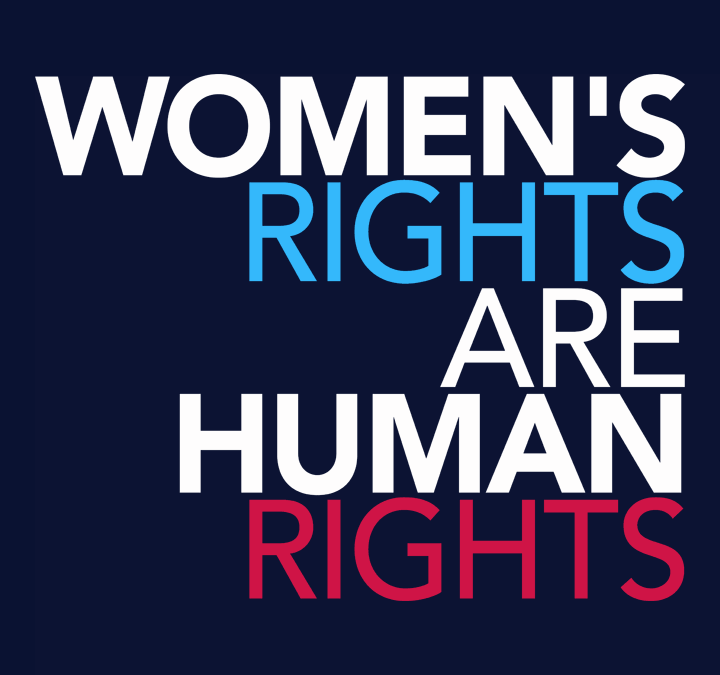

These include the right to live free from violence and discrimination; to enjoy the highest attainable standard of physical and mental health; to be educated; to own property; to vote; and to earn an equal wage. But across the globe many women and girls still face discrimination on the basis of sex and gender.

Human rights include the right to life and liberty, freedom from slavery and torture, freedom of opinion and expression, the right to work and education, and many more. Everyone is entitled to these rights, without discrimination. A right is a choice to make your own opinion and entitlement to things such as education, religion and freedom of speech. Responsibilities are duties or something an individual should do such as following the law and rules. The right to family care, love and protection and the responsibility to show love, respect and caring to others especially the elderly. The right to a clean environment and the responsibility to take care of their environment by cleaning the space they live in. A right to food and the responsibility not to be wasteful.
A name and a nationality from birth. Family care or parental care, or to appropriate alternative care when removed from the family environment. Basic nutrition, shelter, basic health care services and social services. Be protected from maltreatment, neglect, abuse or degradation.Children need special protection because they are among the most vulnerable members of society. They are dependent on others - their parents and families, or the state when these fail - for care and protection.

You have the right to not just an education but a good quality education. It's up to you to ensure you're responsible enough to learn. Make sure you attend school regularly and work hard. Co-operate with your teachers, peers and adhere to the school rules and the Code of Conduct. Child safeguarding is important because when trust is exploited and standards for safeguarding children fail, immense damage is caused with long-term effects on the lives of children, their families, and communities.SIt provides a place for families to cook, eat, sleep, and raise their children. It protects them from extreme temperatures, strong winds, and storms. Shelter provides privacy and safety from human and animal enemies. It also protects belongings, such as clothes, dishes, books, and pictures. shelter in children
These include the right to live free from violence and discrimination; to enjoy the highest attainable standard of physical and mental health; to be educated; to own property; to vote; and to earn an equal wage. But across the globe many women and girls still face discrimination on the basis of sex and gender.Women played a vital role in the campaign as they mobilized and led protests in various towns. Women also formed the Congress of the People, which drew up the Freedom Charter that called for equality for all South Africans. The document was radical, and the apartheid government banned it, which led to more protests.They come from the fact that we are not only physical beings, but also moral and spiritual human beings. Human rights are needed to protect and preserve every individual's humanity, to ensure that every individual can live a life of dignity and a life that is worthy of a human being.
